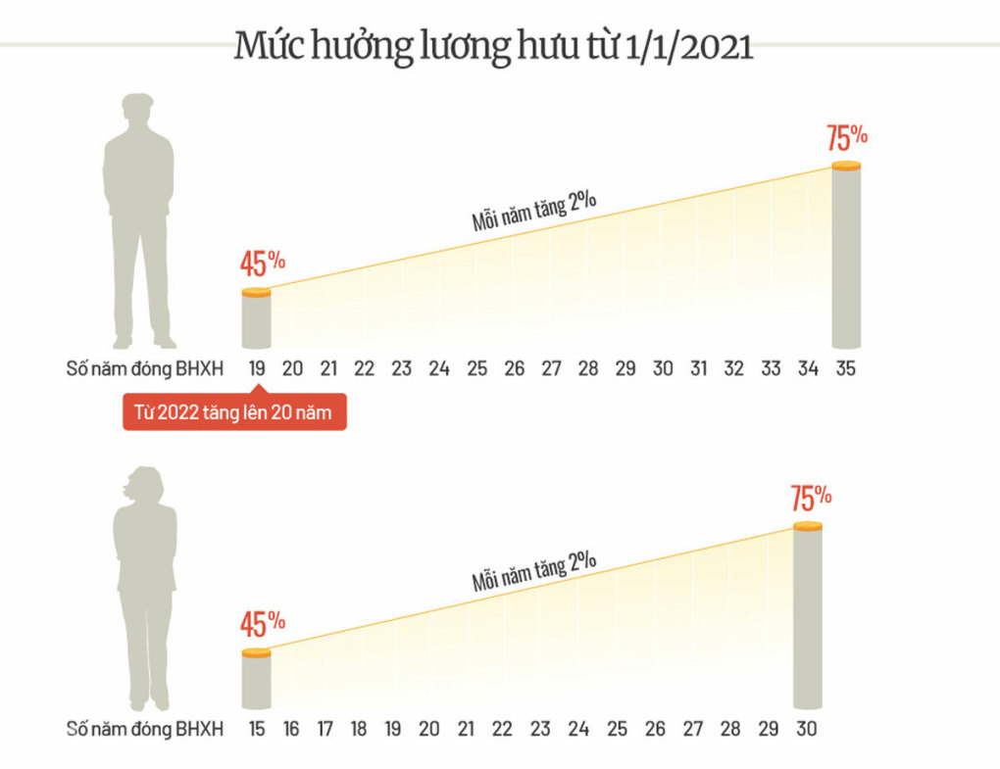

Giảm năm đóng bảo hiểm xã hội, mức lương hưu sẽ thế nào?
Với đề xuất hưởng 2,25% cho mỗi năm đóng bảo hiểm xã hội (BHXH), lao động
nam tham gia 15 năm nhận lương hưu bằng 33,75% bình quân tiền lương tháng
đóng BHXH. Tại dự thảo Luật Bảo hiểm xã hội sửa đổi, Bộ Lao động Thương
binh và Xã hội đề xuất giảm năm đóng BHXH từ 20 xuống 15 để hưởng lương
hưu. Cách tính và mức hưởng lương hưu cũng sẽ thay đổi cho phù hợp. Cụ
thể, lao động nam tham gia BHXH từ 15 đến dưới 19 năm thì lương hưu cho
mỗi năm đóng được tính bằng 2,25% tiền lương bình quân tháng đóng BHXH.
Lương hưu với lao động nam thuộc nhóm này dao động 33,75- 42,75%. Lao động
nam đóng BHXH từ 20 năm trở lên hưởng lương hưu 45%, cộng thêm 2% cho mỗi
năm đóng sau đó. Muốn hưởng tối đa 75%, lao động đóng đủ 35 năm. Lao động
nữ đóng 15 năm BHXH hưởng lương hưu tối thiểu 45%, sau đó cộng thêm 2% cho
mỗi năm tham gia. Để hưởng mức tối đa 75%, lao động nữ phải đóng BHXH 30
năm. Lao động đủ điều kiện hưởng lương hưu mà thời gian đóng dưới 15 năm
(làm công việc nặng nhọc, độc hại; suy giảm khả năng lao động; trường hợp
đặc biệt) thì mỗi năm tham gia được tính 2,25%. So với quy định hiện hành,
lao động vẫn phải đóng tối đa 30-35 năm BHXH để hưởng tỷ lệ lương cao nhất
75%. Theo dự thảo, lao động đủ điều kiện hưởng lương hưu khi đóng đủ 15
năm BHXH và đủ tuổi hưởng lương hưu. Với nam là đủ 61 tuổi 3 tháng, lao
động nữ 56 tuổi 8 tháng, tương ứng với tuổi nghỉ hưu. Mỗi năm sau đó, tuổi
hưởng lương hưu tăng thêm 3 tháng với nam cho đến khi đủ 62 vào năm 2028
và thêm 4 tháng với nữ cho đến khi đủ 60 vào năm 2035. Với mỗi năm nghỉ
hưu trước tuổi, lao động bị trừ 2% mức hưởng. Ngược lại, lao động nam đóng
BHXH hơn 30 năm và nữ đóng trên 35 năm thì ngoài lương hưu tối đa sẽ nhận
trợ cấp một lần cho số năm thừa. Bộ Lao động Thương binh và Xã hội đề xuất
hai lựa chọn: Mỗi năm đóng cao hơn được tính bằng 0,5 lần mức bình quân
tiền lương tháng đóng BHXH, hoặc lao động tiếp tục đóng BHXH thì sau tuổi
nghỉ hưu hưởng nhận trợ cấp bằng 2 lần bình quân lương tháng đóng BHXH cho
mỗi năm cao hơn.
